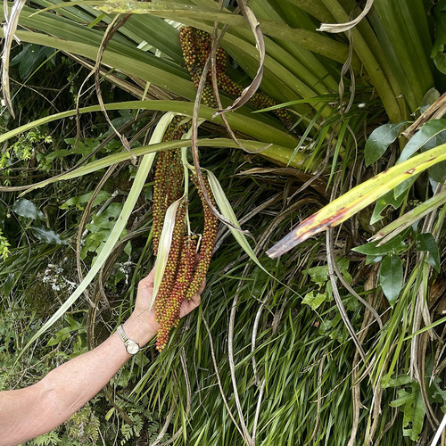

Asteliaceae
Astelia Family
Asteliaceae is a family of monocotyledonous flowering plants in the order Asparagales, distributed across the Southern Hemisphere. It includes robust perennial herbs, often forming large clumps or tussocks, growing terrestrially or as epiphytes. They are characterized by linear or strap-shaped leaves, frequently covered in silvery scales or hairs, flowers with 6 tepals and 6 stamens (often unisexual), and fleshy berry fruits.
Overview
The Asteliaceae family comprises 3-4 genera (Astelia, Collospermum, Milligania, Neoastelia) and approximately 35-50 species of rhizomatous perennial herbs. Their distribution is characteristic of the Southern Hemisphere, found in Australia (especially Tasmania), New Zealand, New Guinea, various Pacific islands including Hawaii, the Mascarene Islands in the Indian Ocean, and the southern tip of South America (Chile). They inhabit diverse environments, including forests (as understory plants or epiphytes), bogs, swamps, and alpine grasslands or herbfields.
Plants typically form dense clumps or tussocks from stout rhizomes. The leaves are often long, linear or strap-like, V-shaped in cross-section (keeled), and notably covered in silvery or whitish scales or silky hairs (indumentum), giving many species a distinctive appearance. Several species, particularly in Collospermum and some Astelia, are epiphytic, growing on trees. Flowers are generally small, often unisexual with plants being dioecious, and borne in branched panicles. The fruit is a brightly colored fleshy berry.
Asteliaceae have limited direct economic importance, although some species (Astelia, Collospermum) are occasionally cultivated as ornamental plants for their foliage and form, especially in rock gardens or as container plants. Ecologically, they can be significant components of their native habitats, particularly in alpine tussock grasslands or as epiphytes contributing to forest structure.
Quick Facts
- Scientific Name: Asteliaceae
- Common Name: Astelia family
- Number of Genera: 3-4
- Number of Species: Approximately 35-50
- Distribution: Southern Hemisphere (Aus, NZ, Pacific Is, S Chile, Mascarenes)
- Evolutionary Group: Monocots - Asparagales
- Current Date: March 29, 2025
Key Characteristics
Growth Form and Habit
Perennial herbs, often robust and tussock-forming, growing from rhizomes. Terrestrial or epiphytic.
Leaves
Leaves are mostly basal or arranged spirally on short stems, linear to broadly strap-shaped or lanceolate. They are typically strongly keeled (V-shaped in cross-section) and have sheathing bases. A key feature is the frequent presence of a dense covering of silvery, whitish, or brownish scales or silky hairs (indumentum), particularly on the lower surface. Venation is parallel.
Inflorescence
Flowers are borne in terminal panicles or racemes, usually on a distinct flowering stalk (scape) that emerges from the leaf cluster. Inflorescences are often much-branched and bear numerous small flowers. Bracts are usually present.
Flowers
Flowers are small to medium-sized, usually unisexual (plants dioecious), sometimes bisexual. They are actinomorphic (radially symmetrical) and typically 6-merous.
- Perianth: Consists of 6 tepals arranged in two similar whorls of 3 (3+3). Tepals are petal-like, usually distinct or fused only shortly at the base, typically whitish, greenish, yellowish, reddish, or brownish.
- Androecium: 6 stamens in two whorls, with distinct filaments attached to the base of the tepals or a short floral tube. Anthers are dorsifixed or basifixed. Sterile stamens (staminodes) are often present in female flowers.
- Gynoecium: Ovary is usually superior (rarely slightly semi-inferior?), composed of 3 fused carpels. It can be 1-locular with parietal placentation or 3-locular with axile placentation. Ovules are few to numerous per locule or ovary. There is a single style topped by a 3-lobed or capitate stigma. A sterile pistil (pistillode) is often present in male flowers.
Fruits and Seeds
The fruit is a fleshy berry, typically globose or ovoid, and often brightly colored (red, orange, yellow, sometimes purplish or blackish) when ripe.
Seeds are few to many per berry, usually small, black, and shiny. Endosperm is present and hard (cartilaginous); the embryo is small.
Chemical Characteristics
Plants contain steroidal saponins. Unlike many other Asparagales families (like Asparagaceae or Amaryllidaceae), they typically lack calcium oxalate raphide crystals.
Field Identification
Identifying Asteliaceae involves recognizing their robust herbaceous habit, characteristic silvery foliage, flower structure, berry fruit, and Southern Hemisphere distribution:
Primary Identification Features
- Habit and Location: Robust, clump-forming perennial herbs (terrestrial or epiphytic) in Southern Hemisphere locations (Aus, NZ, Pacific, S Chile, etc.).
- Silvery Indumentum: Leaves (especially undersides) and other parts often densely covered in silvery/whitish scales or hairs.
- Linear/Strap-shaped, Keeled Leaves: Leaves long, often V-shaped in cross-section, with sheathing bases.
- Flowers in Panicles/Racemes: Small flowers borne in branched clusters on a scape.
- 6 Tepals, 6 Stamens: Flowers typically have 6 similar petal-like tepals and 6 stamens.
- Unisexual Flowers Common (Dioecious): Male and female flowers usually on separate plants.
- Superior Ovary (Usually).
- Berry Fruit: Fruit is a fleshy berry, often brightly colored.
Secondary Identification Features
- Rhizomatous Growth: Spreading underground rhizomes.
- Epiphytic Habit: Some species grow on trees (Collospermum, some Astelia).
- Lack of Raphides: (Microscopic feature).
Seasonal Identification Tips
- Year-round: The tussock or clump-forming habit, leaf shape, keeled structure, and prominent silvery indumentum are key vegetative features. Epiphytic habit is also diagnostic for some.
- Flowering Season: Variable depending on species and location, often spring or summer. Look for the panicles of small, 6-parted flowers; check if plants appear dioecious.
- Fruiting Season: Following flowering. Look for clusters of small, brightly colored berries.
Common Confusion Points
Within their habitats, confusion might occur with other large monocots:
- Asphodelaceae (incl. Xanthorrhoeaceae): Some members form large tussocks (e.g., Xanthorrhoea - grass trees, some aloes). Flowers typically bisexual, often larger or in dense spikes/racemes, ovary superior, fruit usually a capsule (not a berry). Indumentum usually different or absent.
- Iridaceae: Some genera form clumps (Libertia, Diplarrena). Leaves often equitant (flattened in one plane), flowers typically larger, showy, with 3 stamens and an inferior ovary, fruit a capsule.
- Cyperaceae / Restionaceae / Poaceae: Sedges, rushes, and grasses can form large tussocks, but leaves are very different (often cylindrical or flat grass-like), flowers highly reduced, wind-pollinated, lacking showy tepals, and fruits are achenes/caryopses. Lack silvery scales/hairs typical of Asteliaceae.
- Orchidaceae: Epiphytic orchids may occur nearby, but have highly specialized zygomorphic flowers with a labellum and column (fused stamens/style), inferior ovary, and dust-like seeds in a capsule.
- Hypoxidaceae: Also Asparagales, herbs from corms/rhizomes, often hairy leaves (not silvery-scaly), flowers usually yellow, bisexual, 6 tepals/stamens, ovary inferior, fruit a capsule or berry.
Key features for Asteliaceae are the robust tussock/clump habit (terrestrial/epiphytic), silvery indumentum on keeled leaves, panicles of small 6-tepaled/6-stamened flowers (often unisexual), and fleshy berry fruits in the Southern Hemisphere.
Field Guide Quick Reference
Look For:
- Robust perennial herbs (tussocks/clumps)
- Terrestrial or epiphytic (S. Hemisphere)
- Rhizomatous
- Linear/strap-like, keeled leaves
- Silvery/white scales/hairs on leaves
- Flowers in panicles/racemes on scape
- Flowers small, 6 tepals, 6 stamens
- Often unisexual (dioecious)
- Ovary superior (usually)
- Fruit a fleshy berry
Key Variations:
- Habit: Terrestrial vs. Epiphytic
- Leaf width and length
- Density and color of indumentum
- Flower color (whitish, yellow, reddish)
- Ovary: 1-locular vs 3-locular
- Berry color (red, orange, yellow)
Notable Examples
The family primarily consists of the large genus Astelia and the distinct epiphytic genus Collospermum:

Astelia nervosa
Mountain Astelia / Bush Flax
A common species in New Zealand's forests and alpine areas, forming large tussocks. Leaves are stiff, strongly keeled, and covered in silvery scales, especially underneath. Produces branched panicles of small greenish or reddish flowers, followed by orange or red berries. Dioecious.

Astelia chathamica
Chatham Island Astelia / Silver Spear
Native to the Chatham Islands of New Zealand, this species is popular in cultivation for its striking, large rosettes of wide, silvery leaves covered in silky scales. Forms impressive clumps. Dioecious, producing panicles followed by orange berries on female plants.

Collospermum hastatum
Perching Lily / Kahakaha
An epiphytic species native to New Zealand (also related species in Fiji, Samoa). Forms large clumps on tree branches. Leaves are stiff, dark green or yellowish, strongly keeled, forming water-holding tanks at the base. Produces large panicles of yellowish flowers followed by orange-red berries. Dioecious.

Milligania densiflora
(Tasmanian Astelia relative)
Represents the small genus Milligania, endemic to Tasmania, Australia. These are typically smaller, tufted herbs found in alpine or wet habitats. They share the family traits of basal leaves (often hairy) and flowers with 6 tepals and 6 stamens, producing berry fruits.
Phylogeny and Classification
Asteliaceae belongs to the very large and diverse monocot order Asparagales. This order includes numerous well-known families such as Orchidaceae (orchids), Asparagaceae (asparagus family sensu lato), Amaryllidaceae (amaryllis/onion family), Iridaceae (iris family), and Asphodelaceae (aloe/daylily family).
Within Asparagales, Asteliaceae is placed within the core group of the order. Its exact phylogenetic position relative to other families has been somewhat mobile in different analyses, but it is often found associated with a clade including Hypoxidaceae (star grass family) and potentially related to Blandfordiaceae, Boryaceae, and Lanariaceae (other smaller Southern Hemisphere families). It represents a distinct lineage characterized by its specific combination of vegetative features (silvery indumentum, keeled leaves), often dioecious breeding system, and berry fruits within the broader Asparagales context.
Position in Plant Phylogeny
- Kingdom: Plantae
- Clade: Angiosperms (Flowering plants)
- Clade: Monocots
- Order: Asparagales
- Family: Asteliaceae
Evolutionary Significance
Asteliaceae offers insights into monocot evolution, particularly in the Southern Hemisphere:
- Southern Hemisphere Radiation: Represents a significant evolutionary radiation across temperate and tropical regions of the Southern Hemisphere, showcasing adaptations to diverse habitats from alpine zones to rainforest epiphytism.
- Epiphytism in Monocots: Collospermum and some Astelia provide examples of the evolution of epiphytic habits within the Asparagales, including adaptations like water-holding leaf bases.
- Dioecy Evolution: The prevalence of unisexual flowers and dioecy within the family provides material for studying the evolution of separate sexes in flowering plants.
- Indumentum Function: The characteristic silvery scales or hairs likely play roles in reflecting excess sunlight, reducing water loss, or deterring herbivores in their often exposed or specialized habitats.
- Phylogenetic Placement: Its position within the Asparagales helps refine understanding of the relationships and evolutionary history of this massive and economically important monocot order.